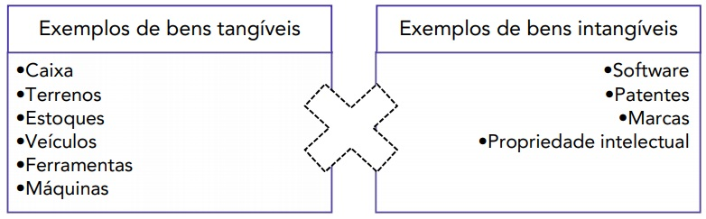
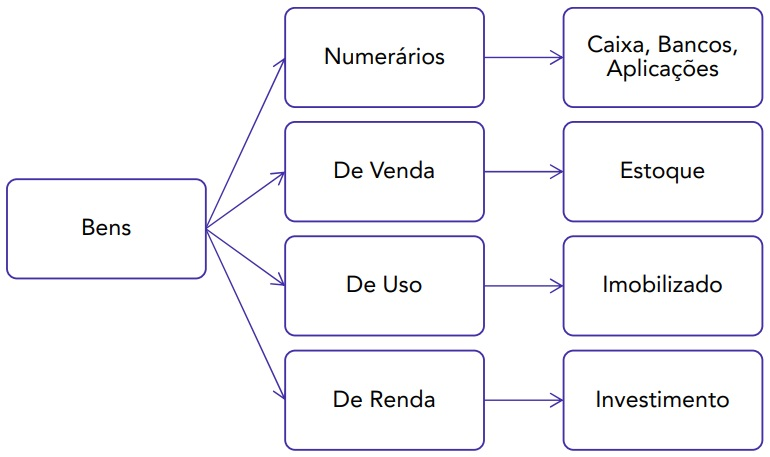

Já sabemos que o Patrimônio é o conjunto de bens, direitos e obrigações de uma entidade. A partir deste momento, chamaremos o conjunto de bens e direitos de ativo, parte positiva do patrimônio. Por seu turno, as obrigações serão chamadas de passivo, parte negativa do patrimônio.
Assim, gravemos: Ativo: bens e direitos Passivo: obrigações
Também é importante saber que:
- Patrimônio bruto ou patrimônio total: total do ativo.
- Patrimônio líquido: Ativo – Passivo.
Bens
Segundo a definição doutrinária, bem jurídico é tudo aquilo que pode ser objeto de direito. Todavia, contabilmente, bens são coisas que capazes de satisfazer as necessidades humanas e que possam ser avaliados em termos monetários, conforme afirma o Mestre Osni Moura Ribeiro.
Os bens hoje, basicamente, podem ser divididos em bens corpóreos e incorpóreos (os chamados ativos intangíveis).
Esquematizemos:

Portanto, a partir deste momento, sempre que falarmos em bens, temos de lembrar que eles integram o grupo do ativo.
Os “bens” podem receber também as seguintes classificações:
Bens Numerários: são as “disponibilidades”, ou seja, o dinheiro prontamente disponível para uso.
Exemplos:
- Caixa
- Bancos Conta Movimento
- Aplicações de liquidez imediata
- Numerário em trânsito
Bens de Venda: São as mercadorias e produtos destinados à venda.
Exemplos:
- Estoque de mercadorias
- Estoque de matérias primas
- Estoque de produtos em elaboração
- Estoque de produtos acabados
Bens de Uso: São os bens usados nas atividades da empresa. Normalmente ficam registrados no Ativo Imobilizado.
Exemplos:
- Imóveis
- Móveis e utensílios
- Veículos
- Máquinas e equipamentos
Bens de Renda: São os bens usados primordialmente para gerar rendas. Normalmente ficam classificados em “Investimentos”.
Exemplos:
- Imóveis para alugar
- Terrenos não utilizados pela empresa
- Obras de arte
Esquematizemos:

Direitos
Os direitos são aquelas quantias que nossa entidade tem a receber ou a recuperar em negócios jurídicos celebrados com terceiros, tal como uma venda a prazo realizada, um adiantamento feito a um fornecedor, um cheque que tenho a receber.
Os direitos também integram o grupo que estamos chamando de ativo.
Obrigações
Resumidamente, são valores que a minha empresa deve a terceiros, tais como impostos a pagar, salários a pagar, financiamentos a pagar, empréstimos a pagar. As obrigações, por seu turno, compõem o grupo que chamamos de passivo.
E como as bancas cobram isso?! Para montar as demonstrações contábeis existentes (e que caem em provas), tais como balanço patrimonial e demonstração do resultado do exercício, o candidato deve saber discernir o grupo ou demonstração a que aquela conta pertence.
Se, por exemplo, a conta caixa, que é um bem, um ativo, for classificada erroneamente como uma obrigação, isto poderá comprometer a resolução de toda a questão.